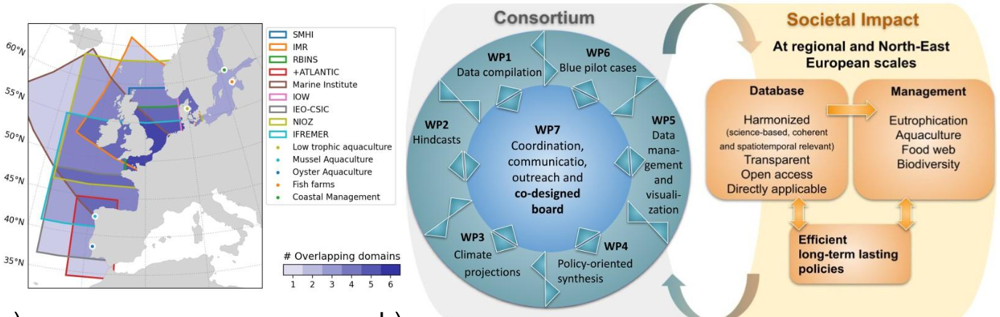

CodeBlue
CodeBlue
October 2025 - September 2028
Summary
Eutrophication is a critical issue in areas of the Northwest European Shelf and the Baltic Sea, diminishing water quality and inhibiting sustainable blue economy sectors. The challenging yet urgent need for international collaboration across the area regarding marine eutrophication is a true code blue for our seas. Information is still lacking to produce an efficient and long-lasting eutrophication policy in a changing climate based on conventions’ recommended nutrient input levels.
CodeBlue will compile observational river data to build a unique and harmonised set of model forcing data to be used in front-line physical-biogeochemical models. CodeBlue will consider the long-term aspects of biogeochemistry cycles (e.g. sea bed nutrient storage, climate change), and the effect of nutrient transport from adjacent basins. A set of long-term model simulations (>50 years) will be generated, including base line hindcasts and “what if scenarios” of low riverine nutrient load and no climate change scenarios as well as climate projections, including a nutrient scenario of “Maximum Allowable Input”. CodeBlue will use a weighted ensemble model approach to combine results and estimate uncertainties at regional scales, and aims to quantify the relative role of enhanced nutrient loads versus climate change in establishing present-day eutrophication as well as evaluate if suggested maximum input levels of nutrients will be effective in a changing climate.

The new information will be tailored in a two-way communication with key stakeholders in an active co-design board to find a way forward in eutrophication management considering environmental changes, targeting a de-eutrophied North-East Atlantic Ocean and Baltic Sea. In addition, the regional scenario results will be used by local models at blue pilot cases in the Baltic Sea, North Sea and Western Iberia (Galicia and Sado estuary) to establish how the implemented measures will affect blue economy activities (e.g. aquaculture) and local marine management. CodeBlue has the ambition to make knowledge readily available to blue food entrepreneurs, local marine managers, scientists and policy-makers by providing innovative, user-driven, interactive visualisation tools tailored to stakeholder needs. The CodeBlue web portal will display large open access (available on EMODnet), transparent and homogenous datasets following the FAIR principles, while stakeholder involvement from start to finish will ensure applicability. Policy briefs facilitate knowledge transfer to stakeholders, while results embedded in existing structures will secure the project’s legacy in the longer term. CodeBlue is by essence a true test use case of the Digital Twin of the Ocean for the North-East Atlantic Ocean and the Baltic Sea, with results aimed at impacting policies at a regional and European Union scale, not only on eutrophication, but also to improve the overall quality of our marine waters and support sustainable blue food.
ECOMOD members involved
ECOMOD main tasks and responsabilities
Contribution to Work Package WP2 : Hindcasts scenarios and Work Package WP3 : Projections, by providing various sets of long-term 3D simulation of the North Sea ecosystem dyanmics, under the umbrella of common scenarion and nutrient load forcings sets.
Leadership of Work Package WP4 : Policy-oriented synthesis. WP4 focussses on translating scientific outputs into actionable insights for marine policy frameworks like HELCOM and OSPAR. It integrates model results and observational data from other work packages to produce harmonised, policy-relevant assessments of eutrophication in the North-East Atlantic and Baltic Sea. In close collaboration with stakeholders and expert groups, we develop a common set of eutrophication diagnostics and establish a harmonised methodology using a multi-model ensemble framework to supports robust uncertainty analysis and ensures results are tailored for decision-making. WP4 also delivers methodological guidelines and synthesised indicator data layers to inform climate change and nutrient management strategies across regional marine ecosystems.
Partners
- Coordination Swedish Meteorological and Hydrological Institute, Sweden (Elin Almroth-Rosell)
- Leibniz Institute for Baltic Sea Research Warnemünde, Germany
- Institute of Marine Research, Norway
- Marine Institute, Ireland
- +ATLANTIC-COLAB, Portugal
- Instituto Español de Oceanografía, Spain
- ETT, Italy
- Ifremer, France
- NIOZ, The Netherlands
- Aarhus University, Denmark
- Tallinn University of Technology , Estonia
- Finnish Environment Institute, Finland
- AquaEcology, Germany
- OCEANDATALAB, France
Funding and contract
This project is funded by the European Sustainable Blue Economy Partnership.